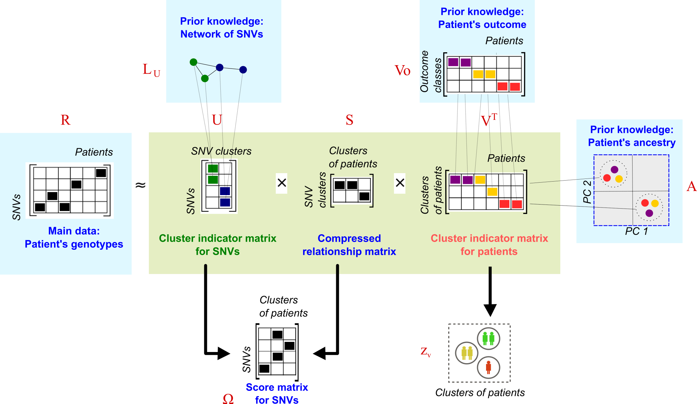

Running cNMTF
Overview
The \(R\) matrix is approximated as the product of low-dimensional matrices \(U\), \(V\) and \(S\). Here, we use \(L_U\), \(V_o\) and \(A\) to penalize the factorisation and guide the solutions of \(U\) and \(V\).

This dimensional reduction provides information for clustering tasks, so \(U\) and \(V\) are taken as cluster indicator matrices for SNVs and patients respectively. Simultaneously, we compute the product of \(U\) and \(S\) to generate a score matrix \(\Omega\). This matrix summarizes the effect of single SNVs on clusters of patients with specific outcomes and can be used to prioritise the SNVs.
Consensus clustering and SNV score
You can run cNMTF with one single function: score.cnmtf. This function reads your input data, finds the optimal parameters for the algorithm and provides you with the clusters of patients and the SNV scores, \(\Omega\).
library('doParallel')
library("igraph")
library('cnmtf')
score.cnmtf( R = R, #Relationship matrix
out = out, #Categorical outcome variable
pop = pop, #Population variable
log.file = "logfile_my_experiment", #Log-file to track the performance
#Variables to Save/Load data and workspaces
name.exp = "my_experiment", #Name of experiment to save files
work.dat = "./test/", #Folder to save and load workspaces
#Number of clusters
define.k = "method", #Method to define k1
k1 = c(2,3,5,8,10,15,20), #Number of clusters of SNVs
k2 = nlevels(out), #Number of clusters of patients
#Penalisation parameters
wparameters = list( gamma1 = 0.5, #Weight for the SNV network, Lu
gamma2 = 1, #Weight for the outcome matrix, Vo
gamma3 = 1), #Weight for the kernel matrix, A
save.parameters = TRUE, #Save parameters to file
run.t.par = 4, #Number of repetitions for parameters fitting
max.try0 = 4, #Maximum number of tries to fit the parameter
snps.known = NULL, #List of known SNV associated with the trait
#Variables to control performance of the algorithm
parallel.opt = TRUE, #Run some instances of the algorithm in parallel
n.cores = 3, #Number of cores to use in the parallel processing
init = 0, #Type of seeding/initialisation of matrices in the algorithm
do.U = TRUE, #Perform clustering of SNPs
calcObj = 20, #Check convergency every 20 iterations
calcObj2 = 40, #Start checking convergency after first 40 iterations
iters = 300, #Number of iterations
run.t.exp = 10, #Number of repetitions for the experiment
display.iters = FALSE, #Display the iterations of function cnmtf
#Randomisations
score.pvalues = TRUE, #Estimate p-values for the scores
random.parallel = TRUE, #Run each randomisation in parallel
randomisations = 100, #Number of randomisations
#Construction of penalisation terms
file.Gu = "./test/Gu_ppi_test.RData" #Workspace with SNV-SNV network
)The arguments for this function are explained as follows.
The input data
You only must provide the relationship matrix, R, the categorical outcome variable, out, the population origin of patients if known, pop and the SNV-SNV network’s workspace, file.Gu (generated with the function create.network). The algorithm will call internally the functions to create the outcome matrix \(V_o\) and the kernel of ancestry, \(A\).
The output data
The output files will be labelled by the name of the experiment, name.exp, and redirected to the folder that you specifiy in work.dat. The algorithm will generate a log.file which reports every internal procedure and might be very useful to catch problems in your data.
Define the number of clusters
By default, the number of clusters of patients equals the number of levels in the outcome (i.e., 2 clusters for case-control designs). On the other hand, the algorithm will try to find the optimal number of clusters for the SNVs. This is based on a grid search (\(k_1: \{2, 3, 5, 10, \dots \}\) ) while tracking the cluster stability. We use a dispersion coefficient, \(\rho_{k_1}\), to summarize the consistency of clustering assignments throughout repetitions of the algorithm. You must define the values of the grid search.
Figure. Finding optimal \(k_1\). The dispersion coefficient is tracked for a grid of \(k_1\). values. The dispersion coefficient reaches a plateau around \(k_1 = 10\), which is the optimum value selected.
Estimate the optimal penalisation parameters
You must weight how much information is transferred from the data sources (\(L_u\), \(A\) and \(V_o\)) into \(U\) and \(V\). By default, the network and genotyping data contribute equally in the final SNV clusters (\(w_{L_U} = 0.5\)). Also, we aim at achieving maximum separation of cases-controls while minimising the effect of population structures embedded in \(R\); therefore, the contribution from \(A\) and \(V_o\) is maximum (\(w_{V_o} = 1\) and \(w_{A} = 1\)). The algorithm will read a list of weights list(gamma1 = 0.5, gamma2 = 1, gamma3 = 1) specifying the contribution from \(L_u\), \(V_o\) and \(A\), respectively.
cNMTF will estimate the optimal parameters that fit the weights provided above. Each parameter is estimated individually in the following order: \(\gamma_2\), \(\gamma_3\) and \(\gamma_1\). For each parameter, cNMTF will create a grid search of 4 elements, max.try0 (i.e, number of tries to fit the parameter). At each of this tries the algorithm will be repeated 4 times, run.t.par, and consensus clustering results generated. These consensus clusters are tracked with two variables:
- We track how the total node degree changes when \(\gamma_1\) increase.
- We track the similarity between clusters, outcome and population ancestry of the patients when \(\gamma_2\) and \(\gamma_3\) change.
Figure. Finding optimal penalisation parameters. The total node degree is tracked for a grid of \(\gamma_1\) values. The similarity cluster-outcome and similarity cluster-population are tracked for a grid of \(\gamma_2\) and \(\gamma_3\) values, respectively. Optimal parameters are: \(\gamma_1 = 12\), \(\gamma_2 = 8\) and \(\gamma_3 = 0.25\).
See more details about the tracking variables in our publication.
Once the algorithm finds such penalisation parameters, everything is ready to conduct the factorisation and generate the final results.
Controlling the performance of the algorithm
The algorithm can run some instances in parallel depending on the available RAM memory of your machine (parallel.opt = TRUE). By default, it will run 10 repetitions of the algorithm (run.t.exp = 10), through the processor cores that you make available (n.cores = 3). For example, the first 3 repetitions of cNMTF will be processed in parallel, after them, another batch of 3 repetitions will be forked in the 3 cores of your machine. The process continues till completing all 10 repetitions. Each core will run a factorisation of your big matrices so requiring enough RAM memory in your machine. It is advisable to keep the number of cores low if your are running cNMTF locally in your regular desktop.
At each repetition, the algorithm will minimise an objective function. This procedure requires some parameters too:
Initialisation of \(U\), \(S\) and \(V\) matrices. It can be done randomly,
init = 0, or by following a Single Value Decomposition based approach,init = 1(Boutsidis et al., 2008).- The algorithm performs iterations to find the optimal \(U\), \(S\) and \(V\) matrices. To stop the iterations, any of the following convergence criteria must be fulfilled:
- The maximum number of iterations is reached (
iters = 300). - The minimum relative change in the objective function is reached (
tof = 1e-05).
Such criteria are evaluated after the firt first 40 iterations (
calcObj2) and then every 20 iterations (calcObj). - The maximum number of iterations is reached (
Creating randomised results
After finishing the main clustering step, the algorithm has the option of factorising randomisations of \(R\), by using the same optimal parameters. We will use these randomisations later to estimate p-values for the SNV scores. You must define whether the randomisations are conducted with score.pvalues = T, the total number : randomisations = 100 and whether they are computed in parallel (random.parallel = TRUE).
To this point, the algorithm has processed your data and directed its outputs to “./test/”. Your workspace is now ready for prioritising variants.